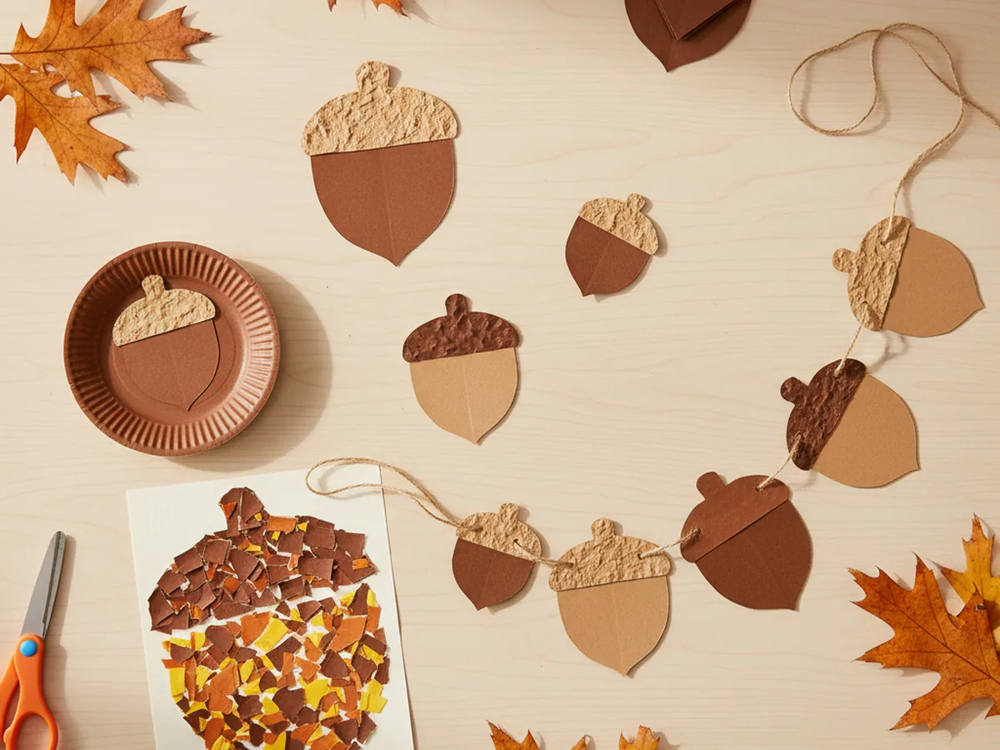
There is something so cozy about gathering little hands around the table for a few simple acorn paper crafts on a quiet autumn afternoon. Acorns are one of those tiny treasures kids love to spot on walks, and turning them into paper art is a sweet way to bring that fall magic home. These ideas are all beginner friendly, low mess, and surprisingly satisfying once finished. 🍂
Whether your child is two or ten, you will find at least a handful of acorn paper crafts here that feel doable on any day. Most of them use the basic supplies you probably already keep in your craft drawer, so you can pick an idea and start right away. Get ready for warm fall colors, cute little caps, and the kind of shared moment that quietly becomes a memory.
What You'll Need
These broad supplies will cover almost every acorn paper craft on the list, so you can pick any idea without scrambling for materials. Most of them are classic crafting staples worth keeping on hand year round.
- Crayola Construction Paper (240 Sheets, 12 Colors), a sturdy assortment that includes the warm browns, oranges, and yellows perfect for acorns and fall leaves.
- Cardstock Warehouse Brown Kraft Cardstock, heavier brown paper that gives acorn shapes a more polished, finished look.
- Fiskars 5 Inch Blunt-Tip Kids Scissors, the trusted choice for little hands learning to cut curves and small shapes.
- Elmer's Disappearing Purple Glue Sticks (30 Count), goes on purple and dries clear, helping kids see exactly where the glue lands.
- Crayola Crayons (24 Classic Colors), for adding faces, texture lines on acorn caps, and little autumn details.
- Self-Adhesive Googly Wiggle Eyes (Assorted Sizes), the instant way to turn a paper acorn into a cute little character.
- Pencil, helpful for tracing acorn shapes before cutting.
15 Adorable Acorn Paper Craft Ideas
1. Classic Acorn Cutout Card
This is the gentle introduction to acorn paper crafts that even the youngest crafters can manage. Trace a simple acorn shape onto brown paper, cut out a textured cap from darker paper, and glue them onto a folded card. Add a sweet handwritten message inside and you have a charming fall greeting your child can mail to a grandparent. It is quick, calm, and makes a lovely keepsake.
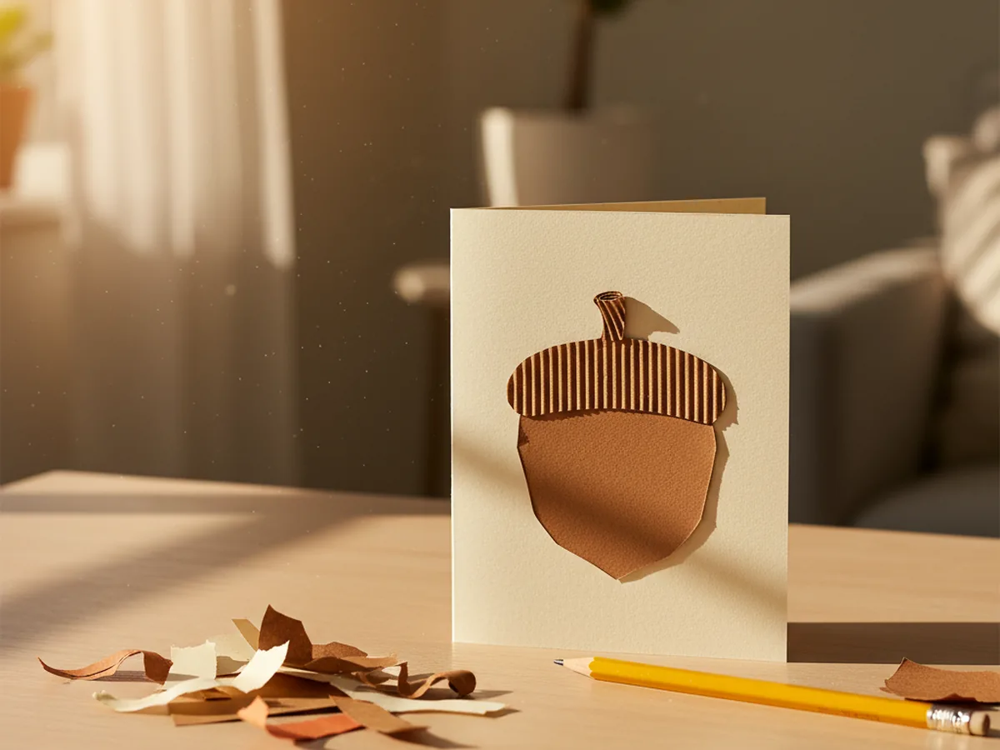
2. Torn Paper Acorn Mosaic
No scissors needed, which makes this one a favorite for toddlers. Tear small pieces of brown and tan paper, then glue them inside an acorn outline to create a soft mosaic look. The torn edges add wonderful texture and let little hands stay busy without any pressure to be precise. This is one of those acorn paper crafts that always turns out adorable, no matter how messy the tearing gets.
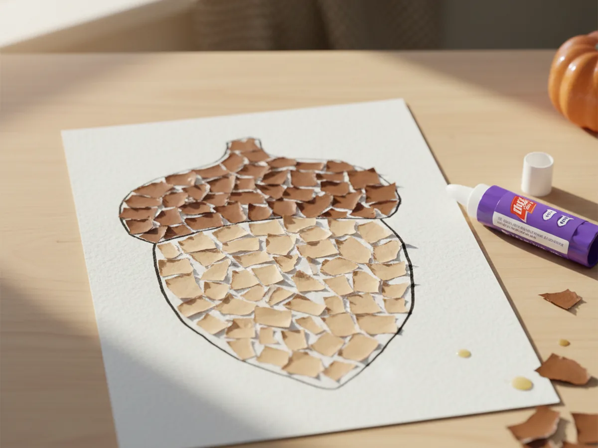
3. Acorn Paper Bag Puppet
Turn a small brown paper bag into a chatty acorn puppet by gluing a darker brown paper cap on top and adding wiggly eyes and a smile on the flap. Kids love using the bottom of the bag to make their acorn talk, and a whole troop of acorn puppets quickly becomes a puppet show. This is a sweet way to spark imaginative fall play after the craft is done.
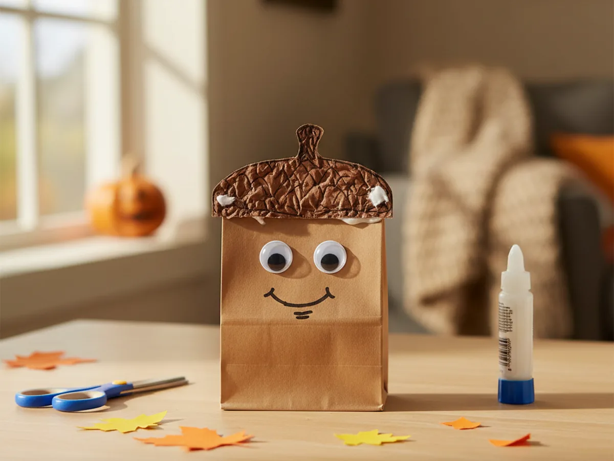
4. Fingerprint Acorn Tree
Draw a simple oak tree trunk on a piece of paper, then let your child press their fingertip into brown ink or paint to make tiny acorn shapes hanging from the branches. Add a small darker dot on top of each fingerprint for the cap. It is one of the sweetest keepsake acorn paper crafts because those tiny fingerprints capture a moment in time that grows with your child.
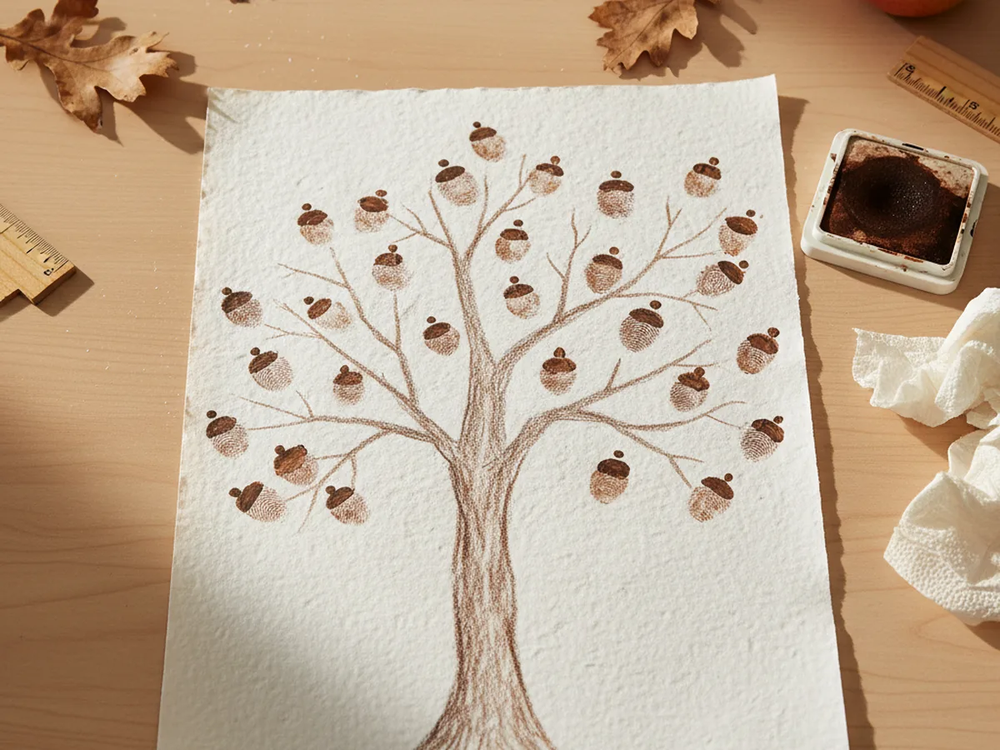
5. Acorn Paper Garland
Cut a dozen or so paper acorns from brown and tan cardstock, then thread them onto a long piece of yarn or string to make a cheerful fall garland. Hang it across the mantel, along a window, or above the kitchen table for an instant cozy autumn vibe. Kids feel proud every time they walk past their handmade decoration, and the project keeps little hands busy for a satisfying stretch of time.
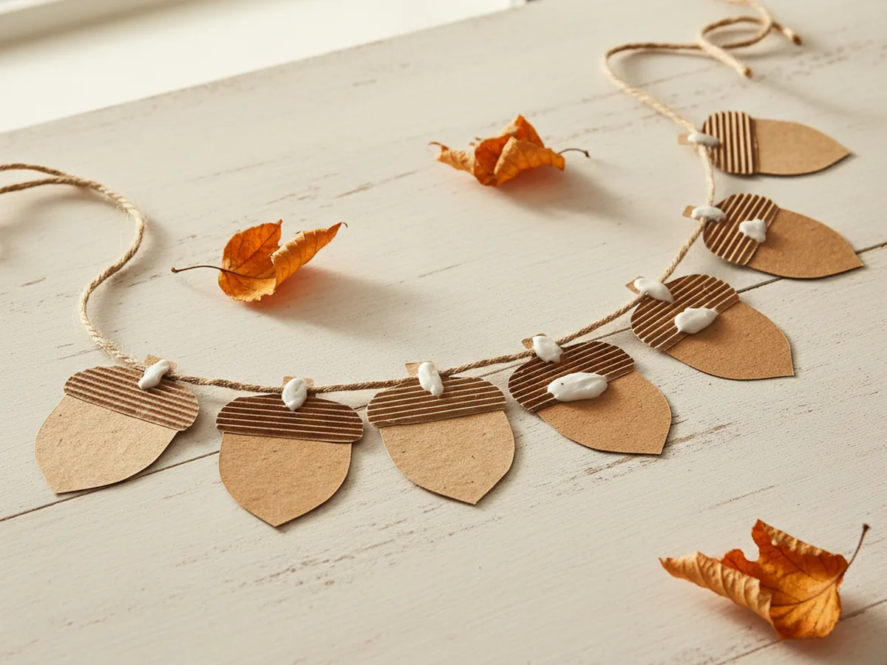
6. Paper Plate Acorn
Fold a small paper plate in half and round the bottom slightly to form the acorn body, then glue a textured strip of crinkled brown paper across the top for the cap. Add a tiny stem on top and a curled paper leaf on the side for extra charm. This is one of the easiest oversized acorn paper crafts for displaying on the wall or front door.
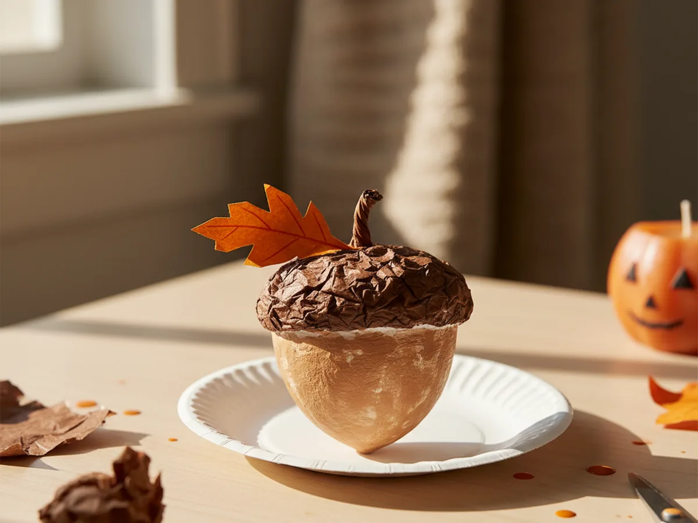
7. Accordion Acorn Card
Cut two acorn shapes from brown paper and connect them with an accordion-folded paper strip so the card can pop and stretch. Decorate the front acorn with a simple smiley face, and hide a sweet message between the folds for a fun fall surprise. Older kids especially love the little engineering moment when they see the accordion stretch open.
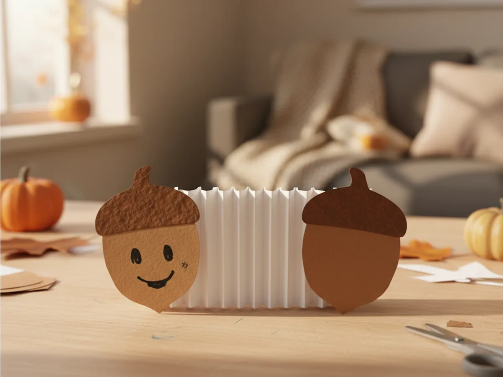
8. Acorn Crown Headband
Cut a paper strip long enough to fit around your child's head, then glue several small paper acorns and oak leaves along the front. Tape the ends together for a wearable crown your little one can show off all day. There is something extra magical about wearing a craft, and an acorn crown turns any afternoon into a fall forest adventure.
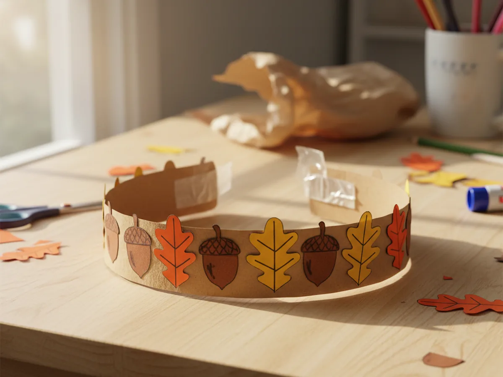
9. Acorn Name Banner
Cut large paper acorn shapes and write one letter of your child's name on each one with a chunky marker or crayon. String them onto twine and hang the banner over a bed, playroom door, or fall decor display. This is one of those simple acorn paper crafts kids treasure because their own name turns it into something personal and proud.
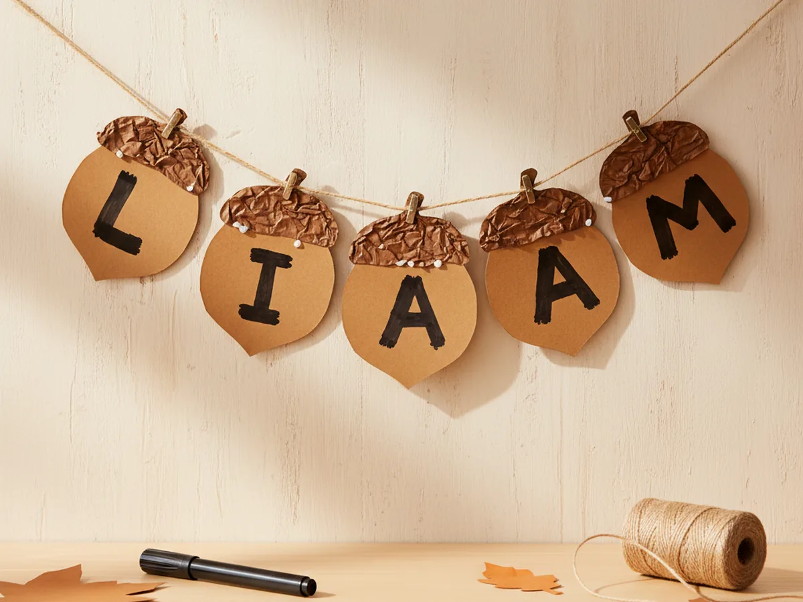
10. Tissue Paper Acorn Sun Catcher
Cut an acorn shape out of black paper to make a frame, then layer scraps of orange, yellow, and red tissue paper inside the opening. Tape the back with clear contact paper or wax paper to hold everything in place, and hang it in a window. The light pouring through is honestly stunning. It is one of those acorn paper crafts that ends with the biggest smiles when the sun finally hits it.
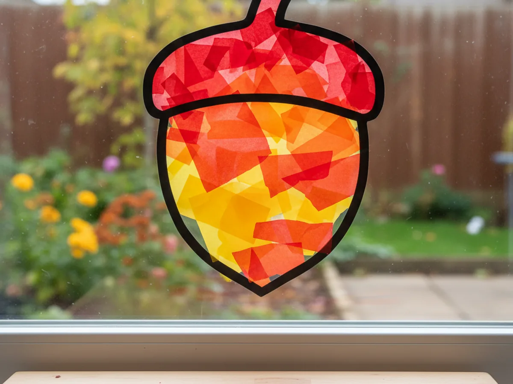
11. 3D Paper Acorn Sculpture
Cut four matching acorn shapes from brown paper, fold each one in half down the middle, and glue the halves together so the acorn pops out in three dimensions. Hang it from a string for a charming ornament that twists and turns in the breeze. Older kids enjoy the small engineering challenge of getting all four halves to line up evenly.
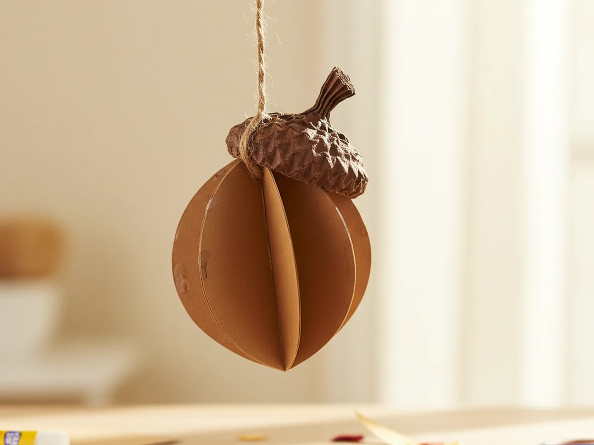
12. Acorn Corner Bookmark
Fold a small square of brown paper into a triangle pocket that slides over the corner of a page, then trim the front into an acorn shape with a textured cap. Add a tiny smile or googly eyes for personality. Your child will love seeing their handmade bookmark peek out of their favorite chapter book. It is one of the most useful paper acorn crafts on this list.
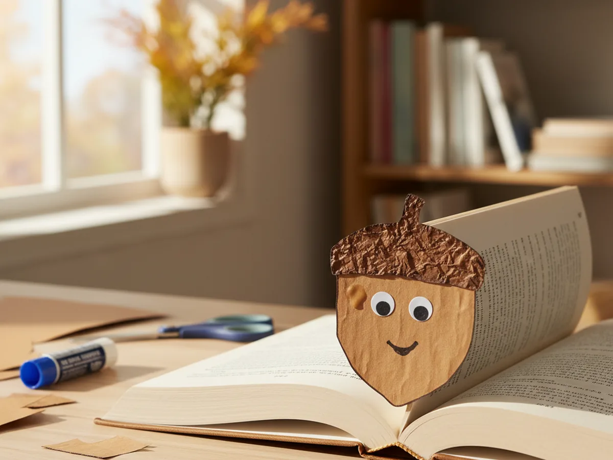
13. Squirrel and Acorn Collage
Pair acorns with their favorite forest friend by cutting a chunky squirrel shape and gluing several small paper acorns around it on a sheet of paper. Add a fluffy tail with curled paper strips and a couple of tiny oak leaves for atmosphere. The combination of squirrel and acorn paper crafts sparks lots of fun storytelling about woodland adventures.
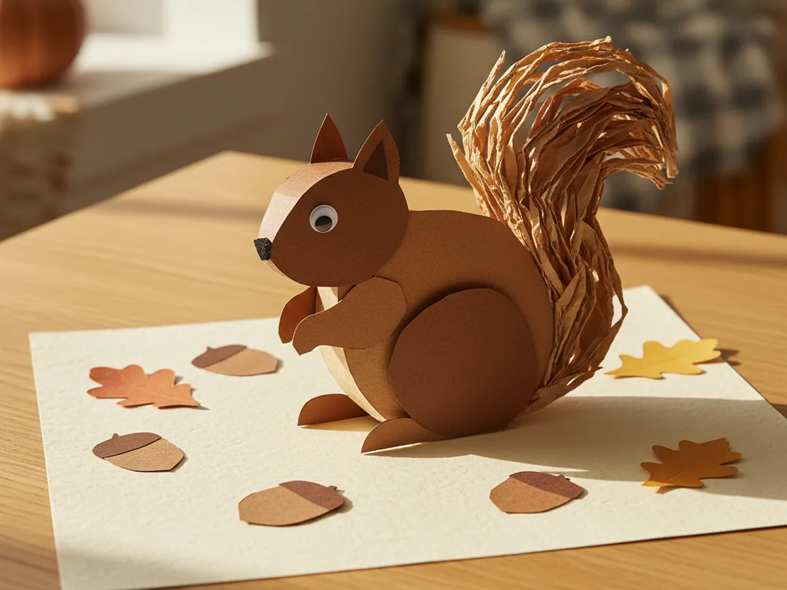
14. Heart Acorn Paper Craft
Cut a brown paper heart and turn it upside down so the rounded curves form the body of the acorn. Add a darker textured cap on top with a tiny stem, and you have a sweet heart-shaped acorn that feels just a little extra special. This little twist on the classic acorn paper craft is perfect for a fall card to grandma or a quick handmade gift tag.
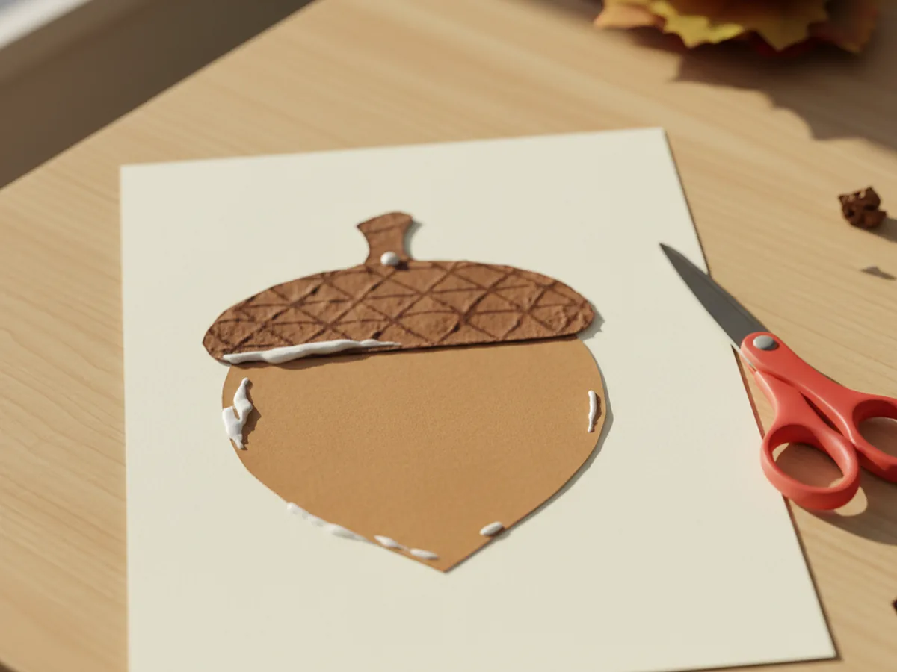
15. Acorn Counting Tree
Draw a big oak tree on a sheet of paper, then label each branch with a number from one to ten. Cut a stack of small paper acorns and let your child place the right number of acorns on each branch as a quiet counting game. It is one of those acorn paper crafts that doubles as a learning activity, and little ones love getting to rearrange the acorns over and over. 🌰
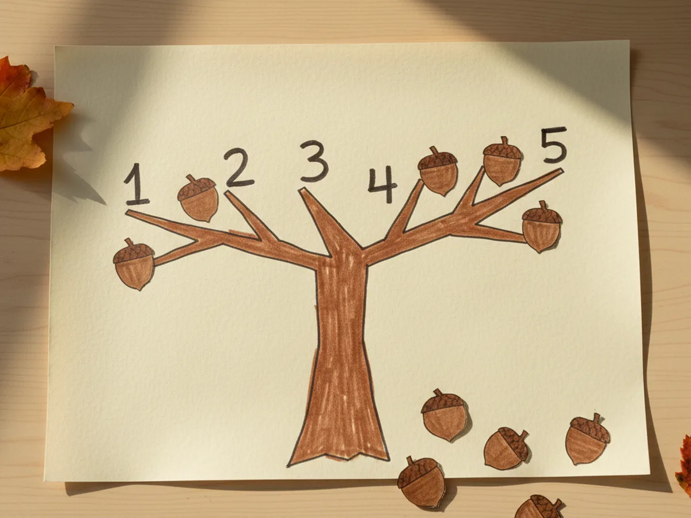
Final Thoughts
Tiny, humble, and impossibly cute, acorns are the perfect autumn craft inspiration. Whatever idea you pick from this list, the real magic is the quiet hour spent together at the table with brown paper, scissors, and your child's bright imagination. 💛
Pick the acorn paper craft that fits the day, gather a few simple supplies, and let your little one take the lead on colors and details. The finished crafts will fill your home with cozy fall charm, and the moments behind them will fill your heart even more.
More Crafts You'll Love
If your family is in full fall crafting mode, here are two more autumn paper collections worth a look.
Happy crafting, mama, and have the coziest fall season together.